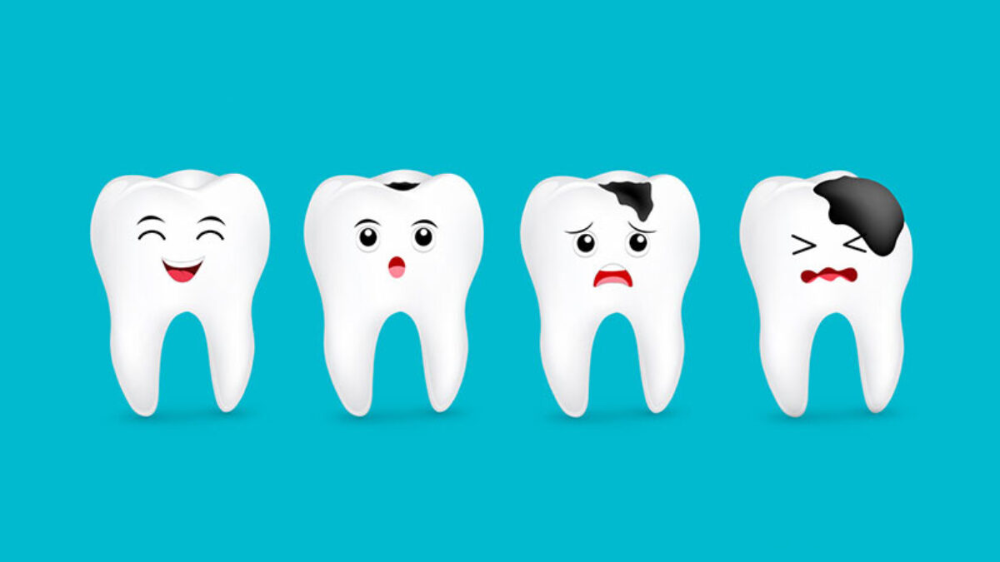

TOOTH DECAY

- You can always do this. When the pain starts, put hot water on medium heat and add rock salt and gargle.
- These remove not only the tooth property but also the food particles present in the dental cavities.
- Controls inflammation and sore throat caused by toothache.
- Always rinse your mouth with salt water to ensure the safety of your teeth Bitter mistletoe property can help treat toothache.
- Grind the wasabi with water and take its juice. Put that extract where the property tooth is and leave it for 10 minutes.
- Do not even spit on the tooth after applying the wasabi juice.
- Only then will the bitterness go all the way to the root of the tooth and destroy the germs.
- Neem,Keep only the willow juice. Do not place the paste.
- After 15 minutes, rinse your mouth with lukewarm water.
- For those who want their teeth to always be healthy, it is a good idea to brush your teeth with neem or alum.
- You can grind the clove and apply it on the tooth where the property.
- At night, put it on the tooth and lie down with the tooth pressed.
- Currently clove oil is available in stores.
- Put a drop of this oil on the toothpaste and press the toothpick into a clean round small ball on top of it.
- Doing so will allow the oil to stay inside the tooth property without leaving the tooth.
- Thus the dental property will heal quickly.
- Turmeric powder, which acts as a disinfectant, also helps to destroy germs on the teeth.
- When there is unbearable pain, add rock salt with turmeric powder and rub the crushed property on the tooth.
- The pain will go away immediately if you do a gentle massage without rubbing fast.
- When the pain subsides and you feel salty, you may feel a sudden decrease in pain if you swell your mouth over moderate heat.
- Do not eat anything for 20 minutes after that. Avocado powder is available at the drugstore.
- Brush your teeth with a powder made from the roots and leaves of this plant.
- These are called diamond wires
- Garlic,Peel a squash, grate it and squeeze the juice.
- Take the garlic and press it on the property. Do not let saliva fall on it.
- The juice is slightly irritating to the teeth, but they go deep and kill the bacteria.
- If you put garlic in the tooth twice a day, the initial stage property will heal the tooth.